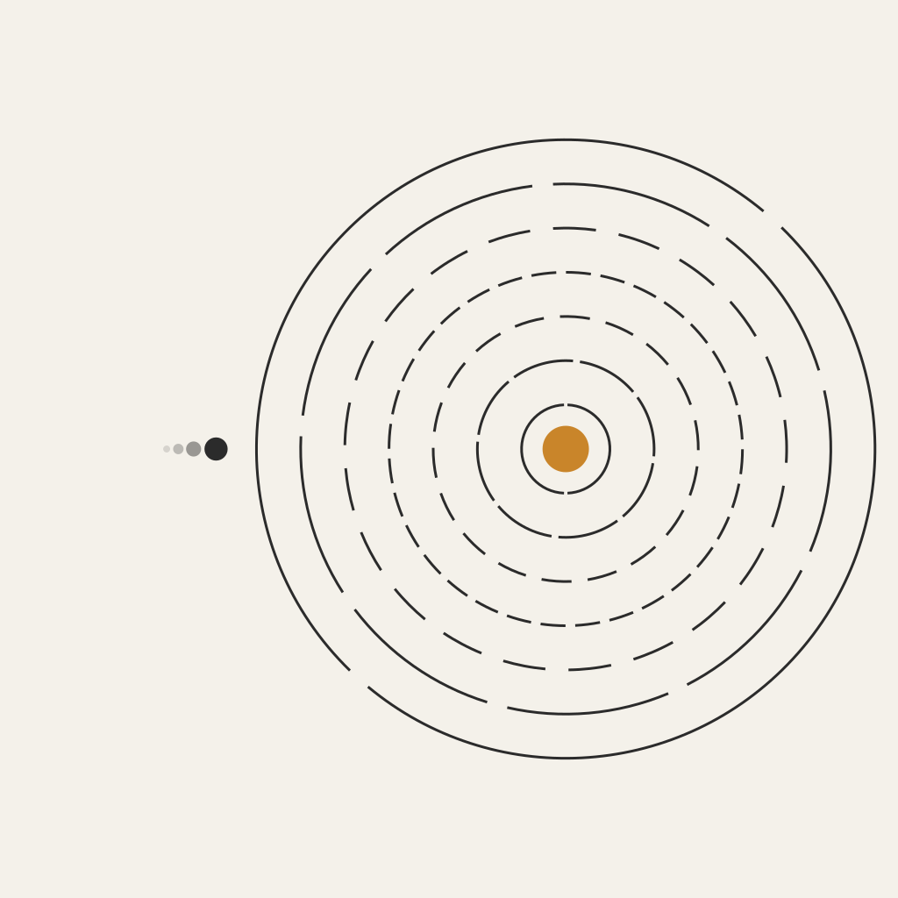
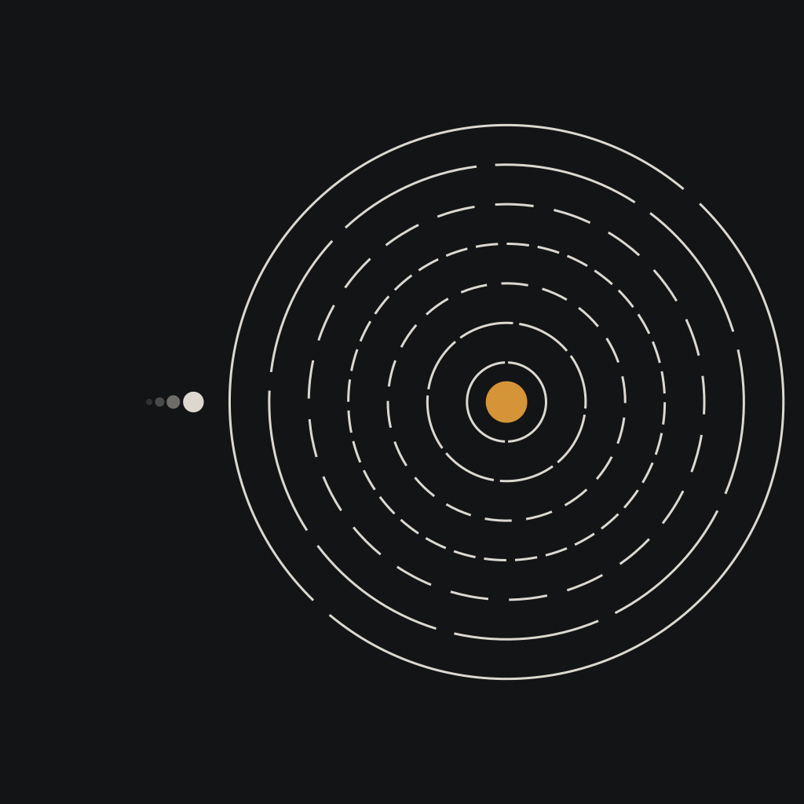

Learn
How reactors work, what the numbers mean, and why denser energy means less land, less fuel, and more human freedom.
Start here

NucleicsNuclear abundance
Nucleics is advocacy for a simple north star: 100 MWh of electricity per person per year. Global energy poverty is a solvable engineering problem. Nuclear fission is the quiet path that scales.
How reactors work, what the numbers mean, and why denser energy means less land, less fuel, and more human freedom.
Start hereClear claims, careful evidence, no boom rhetoric. Fission is safe, methodical, reliable — boring in the best way.
Make the casePolicy, plants, and people who ship. Abundance is built by engineers and operators, not slogans.
Get involvedThe metric
100 MWh/person/year
Electricity only — not total primary energy. Enough to lift households out of energy poverty and power industry, transport, desalination, and cooling as the climate warms. Most of the world is still far below what a modern life quietly assumes.
The name nods to Asimov. The work is for people who still lack light, heat, and productive power — and for everyone who will need more of all three.